ΕΚΘΕΣΗ: ΠΟΛΕΜΙΚΟ ΜΟΥΣΕΙΟ ΝΑΥΠΛΙΟΥ
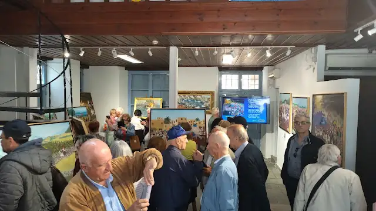
Πραγματοποιήθηκαν τα εγκαίνια (18-5-2025) της έκθεσης του λαϊκού ζωγράφου Νώντα Ρεντζή στο Πολεμικό Μουσείο Ναυπλίου με την παρουσία πλήθους κόσμου. Η έκθεση ξεκίνησε ήδη από την προηγούμενη Ευρωπαϊκή Βραδιά των Μουσείων με μεγάλη επιτυχία αν κρίνουμε από την προσέλευση του κοινού που ξεπέρασε τις 400 εισόδους. Η Ευρωπαϊκή Βραδιά Μουσείων καταργήθηκε επίσης από τον ICOM, αλλά εμείς επιμείναμε δημιουργικά και χαρήκαμε με τις επαφές που είχαμε με Έλληνες και ξένους οι οποίοι επισκέφτηκαν την έκθεση.

Η έκθεση περιλαμβάνει 20 πίνακες του λαϊκού ζωγράφου με αναπαραστάσεις από τις μεγάλες στιγμές της Ελληνικής Επανάστασης και της νεότερης/σύγχρονης ιστορίας μας (δολοφονία Καποδίστρια, Μικρασιατική εκστρατεία, Κατοχή, Απελευθέρωση), καθώς επίσης και μεγάλες μορφές του Αγώνα. Η έκθεση είναι η τρίτη θεματική έκθεση που πραγματοποιεί ο καλλιτέχνης στην Αργολίδα συμπληρώνοντας τη μακρά σειρά των περισσότερων από τριάντα ατομικών και άνω των 400 ομαδικών εκθέσεων. Η θεματολογία του αντλεί από την πολιτική, στρατιωτική και κοινωνική ιστορία της Ελλάδας παρουσιάζοντας έναν ιδιαίτερο διάλογο του καλλιτέχνη με τα γεγονότα και την κοινωνική πραγματικότητα μέσω των χρωμάτων. Αρκετοί είναι εκείνοι οι κριτικοί που θεωρούν το έργο του ως συνέχεια εκείνου του Θεόφιλου και καταγράφουν ανάμεσα στα ιδιαίτερα στοιχεία του έργου την χρωματική ένταση και την κίνηση των σωμάτων στις αποτυπώσεις των μαχών, των διαδηλώσεων ή των ιδιαίτερων γεγονότων (π.χ. δολοφονία Καποδίστρια).
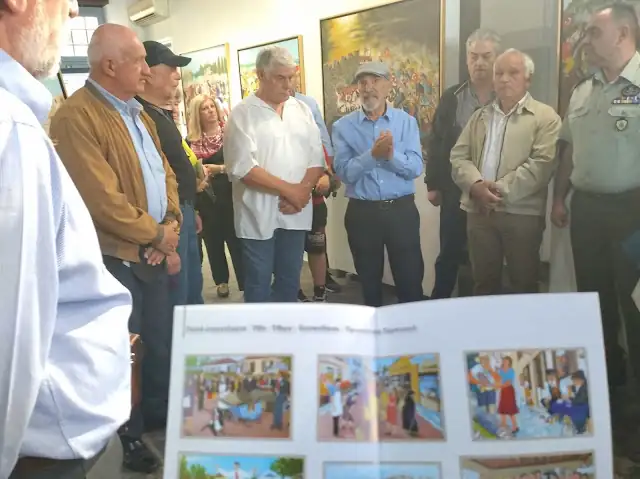
Η σημασία του έργου του έγκειται και στο γεγονός ότι ο ίδιος είναι αυτοδίδακτος και άρχισε να ζωγραφίζει μετά το τέλος της επαγγελματικής του καριέρας ως οδοντίατρος. Γεννήθηκε το 1939 στον Δρυμώνα Τριχωνίδας και έζησε τα παιδικά του χρόνια μέσα στα τραγικά γεγονότα της νεοελληνικής πορείας με τους πολέμους και τους αλληλοσπαραγμούς. Στα γεγονότα αυτά αναφέρθηκε διεξοδικά στην ομιλία του στα εγκαίνια της έκθεσης εξηγώντας την ηθική και ψυχολογική επίδραση που ασκούν στην σύλληψη της ιδέας ενός έργου και στην υλοποίησή του. Η τεχνοτροπία του, επομένως, είναι άμεσα συνδεδεμένη με τις βιωματικές καταβολές και επιδράσεις καθώς και με την ανάγνωση και εμβάθυνση στα ιστορικά γεγονότα που αποτελούν δεξαμενές έμπνευσης για κάθε νέο έργο.
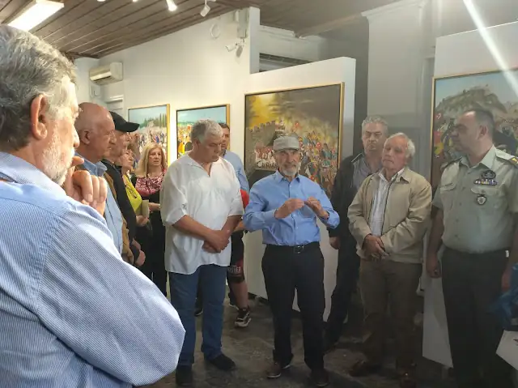
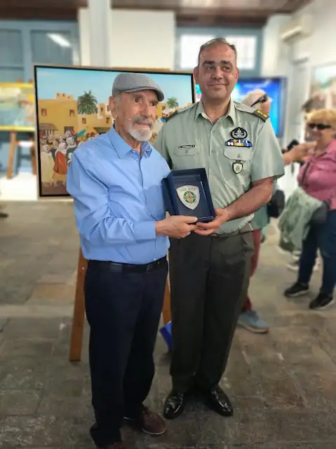
Στην έκθεση του Πολεμικού Μουσείου Ναυπλίου παρουσιάζονται για πρώτη φορά στην Αργολίδα έργα από τις τελευταίες συνθέσεις του καλλιτέχνη. Το Πολεμικό Μουσείο έχει δημιουργήσει μια φιλόξενη στέγη για έργα καλλιτεχνών και συμμετείχε με τη συγκεκριμένη παρουσίαση του Νώντα Ρεντζή στην Διεθνή Ημέρα Μουσείων. Η μόνιμη έκθεση έχει ήδη μια σημαντική μουσειοπαιδαγωγική συνεισφορά με δεκάδες σχολεία από όλη την Ελλάδα να το επισκέπτονται και πτυχιακές εργασίες φοιτητών να το εξετάζουν ως κύρια θεματική. Ο Διευθυντής του Μουσείου Ταγμ/ρχης Μενέλαος Σπυρόπουλος, στο καλωσόρισμα των εγκαινίων αναφέρθηκε στη δυναμική που αναπτύσσει το Πολεμικό Μουσείο Ναυπλίου, ευχαρίστησε τον καλλιτέχνη Νώντα Ρεντζή για την αποδοχή της πρότασης να εκθέσει τα έργα του στην αίθουσα των περιοδικών εκθέσεων και ανακοίνωσε μια σειρά από νέες εκθέσεις οι οποίες θα φιλοξενηθούν μέχρι το τέλος του χρόνου. Ας σημειωθεί πως μόνο το Σαββατοκύριακο (17/18 Μαΐου) πραγματοποιήθηκαν περισσότερες από 500 είσοδοι επισκεπτών συνολικά στις εκθέσεις του Μουσείου.
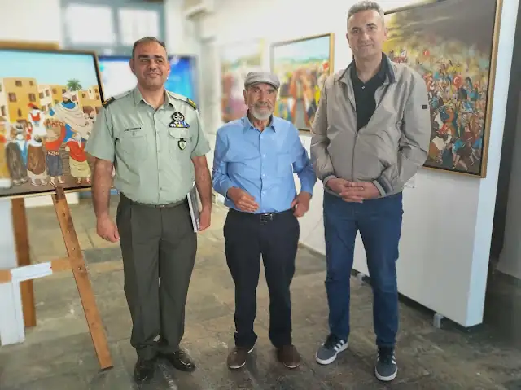
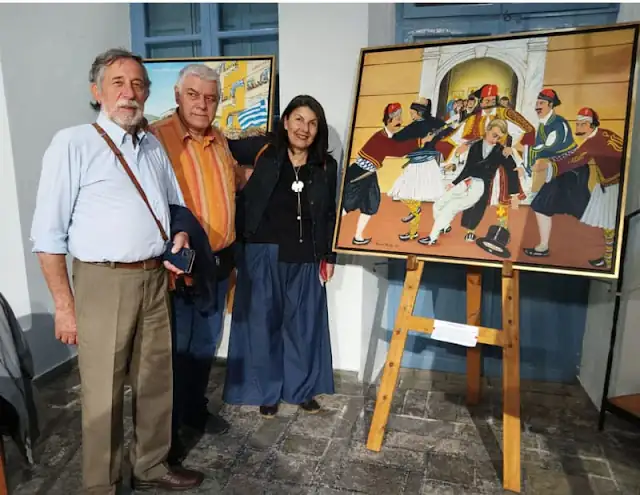
Στα εγκαίνια παραβρέθηκε και ο Αντιδήμαρχος Πολιτισμού του Δήμου Ναυπλιέων κ. Γιάννης Μανώλης ο οποίος καλωσόρισε τον καλλιτέχνη στο Ναύπλιο. Η έκθεση υλοποιήθηκε με την συμμετοχή του Ομίλου Αργολικών Μελετών και Τεκμηρίωσης, ο οποίος θα διοργανώσει στις 21 Ιουνίου με την ευκαιρία της έκθεσης και σε συνεργασία με την Πινακοθήκη Ναυπλίου, βραδιά αφιερωμένη στη λαϊκή ζωγραφική και τους καλλιτέχνες της.
«Τα τσολιαδάκια» θα μπορούσε να είναι ο τίτλος μιας παρουσίασης έργων λαϊκής ζωγραφικής και φωτογραφικής αποτύπωσης των καλλιτεχνών που ζωγραφίζουν μάχες του 21, ήρωες, καθημερινές εορταστικές συνευρέσεις, τραπέζια γιορτινά και πολλά θέματα με μια απλοϊκή ομορφιά που συναρπάζει και μιλάει αδιαμεσολάβητα στην ψυχή του ανθρώπου. Από τη μια ο Θεόφιλος Κεφαλάς – Χατζημιχαήλ (γνωστότερος ως Θεόφιλος) με τη σπάθα και τη τσολιαδίστικη στολή του, δίπλα στη μητέρα του σε μια από τις πολλές θεατρικές παραστάσεις που οργάνωνε αντλώντας από την ελληνική ιστορία, την ιστορία του τόπου και των προσωπικών του βιωμάτων. Από την άλλη, νεαρό τσολιαδάκι σε σχολική εορτή εθνικής επετείου, ο Νώντας Ρεντζής, οδοντίατρος στο επάγγελμα, δημιούργησε ένα σύγχρονο έργο λαϊκής ζωγραφικής αντλώντας επίσης από την σύγχρονη ιστορία του τόπου του, την καθημερινότητα των γειτονιών που γνώρισε και των προσωπικών του βιωμάτων. Δυο διαφορετικές πορείες ζωής, μια κοινή στάση βιωματικής απλότητας απέναντι στο ιστορικό γεγονός και την καθημερινή ζωή στο όριο της λαογραφικής καταγραφής.
Δεν είναι τυχαία η απήχηση της λαϊκής ζωγραφικής, ακόμη και στις νεότερες γενιές, καθώς η αναζήτηση της ομορφιάς της απλότητας απαντά σε ένα από τα ουσιωδέστερα αιτήματα ή/και ανάγκη στην βάρβαρη πολυπλοκότητα μιας καθημερινότητας η οποία διαλύει τις κοινωνικές σχέσεις και απομυθοποιεί την ομορφιά του κόσμου και των συναισθημάτων μέσω της οικονομικής συναλλακτικότητας. Αυτό το είδος τέχνης που συνομιλεί με τη λαϊκή ψυχή θα βρεθεί στο επίκεντρο των αναζητήσεων και του θαυμασμού που αποδίδεται σε μια τέχνη βαθιά συναισθηματική, η οποία παρουσιάζει τα θέματά της με τρόπο βιωματικά εσωτερικευμένο. Η ομορφιά της απλότητας, οι σκηνικές αναπαραστάσεις ξεχασμένων τόπων και μορφών, η πηγαία άντληση λαογραφικού υλικού από την καθημερινότητα και η συνειδητή αναφορά στις ιστορικές ρίζες και τα βιώματα, αποτελούν το πεδίο άνθησης της λαϊκής ζωγραφικής.
Τρεις εξαιρετικοί επιστήμονες – ερευνητές θα παρουσιάσουν αυτή την ομορφιά: Λαμπρινή Καρακούρτη (Ιστορικός Τέχνης-Επιμελήτρια της Εθνικής Πινακοθήκης), Καλλιόπη Καλποδήμου (Φιλόλογος-Θεατρολόγος), Βασίλης Τσιλιμίγκρας (Φιλόλογος-Ιστορικός). Θα μιλήσει επίσης ο Νώντας Ρεντζής, τιμώμενος λαϊκός ζωγράφος, που εκθέτει μέρος των έργων του στην αίθουσα του Πολεμικού Μουσείου μέχρι το τέλος Ιουνίου 2025. Πρόκειται για μια από τις θεματικές εκδηλώσεις πολιτισμού που δεν έχουμε συχνά την ευκαιρία να παρακολουθήσουμε και η οποία θα πραγματοποιηθεί το Σάββατο 21 Ιουνίου 2025 στο φιλόξενο χώρο της Εθνικής Πινακοθήκης (παράρτημα Ναυπλίου) που συνδιοργανώνει την εκδήλωση με το Δήμο Ναυπλιέων και στην οποία θα δοθεί η ευκαιρία να γνωρίσουμε τους λαϊκούς ζωγράφους και το έργο τους και κυρίως να συζητήσουμε γι’ αυτό.
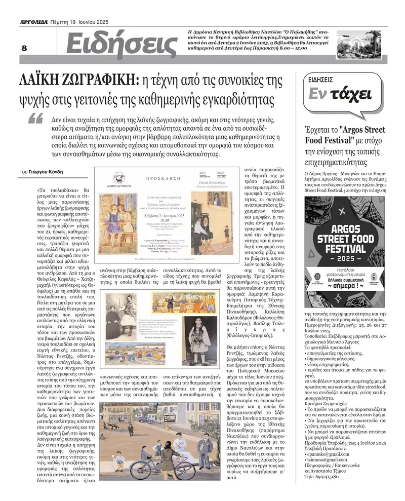
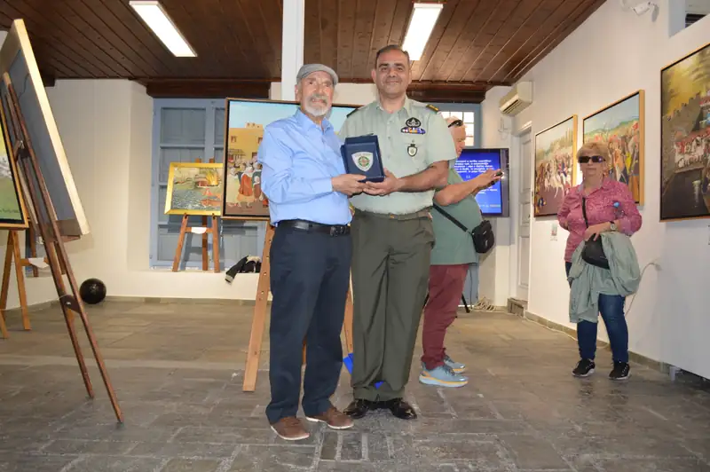
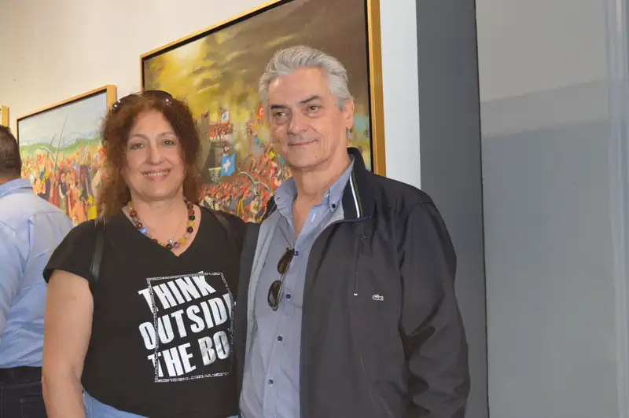
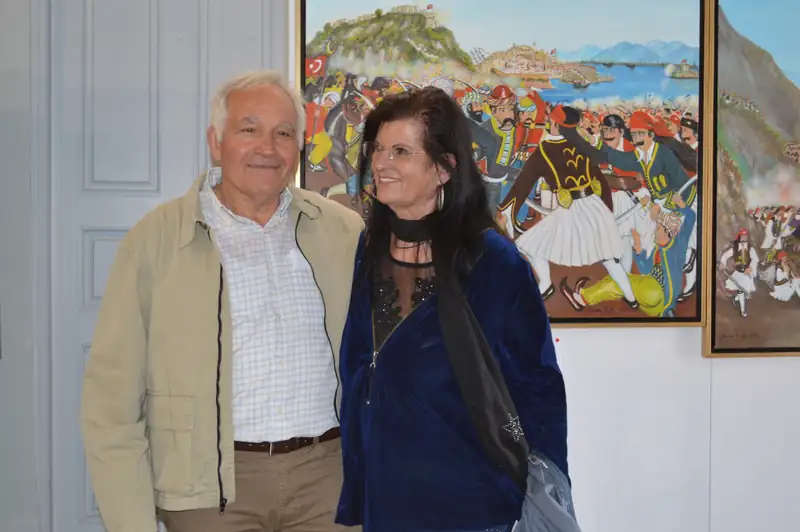
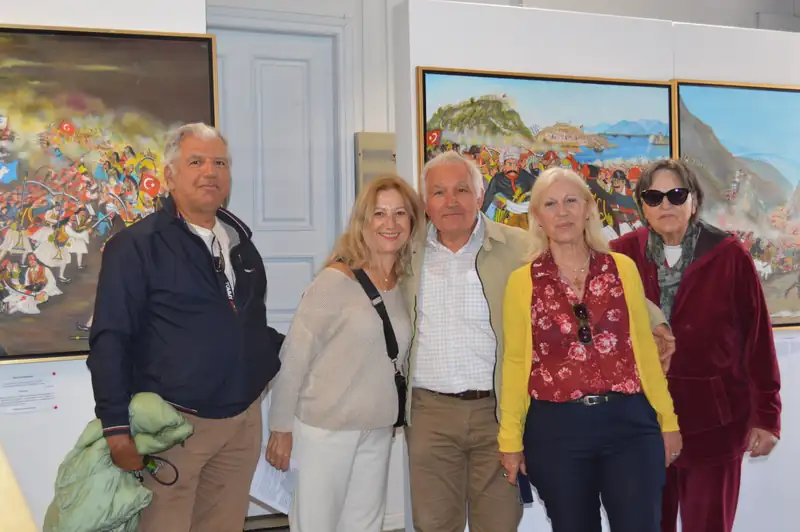
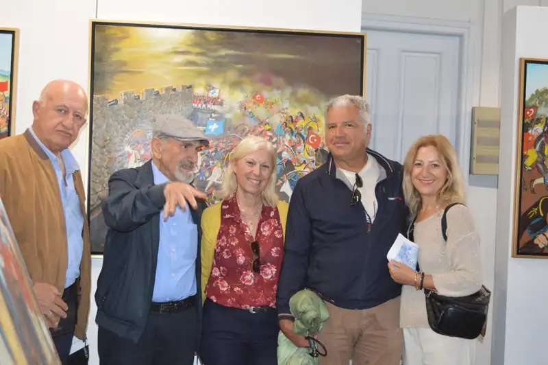
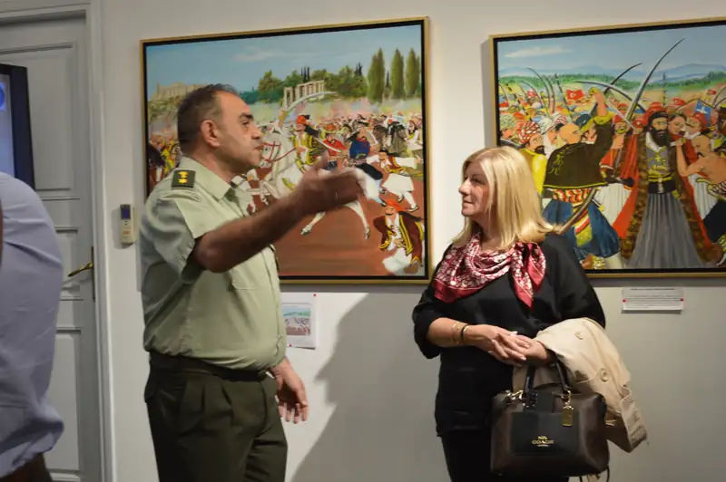